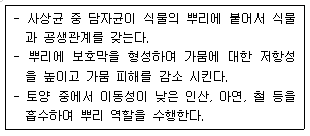
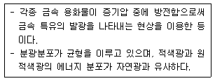
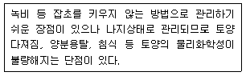
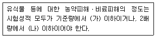
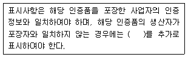
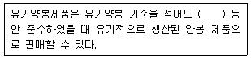
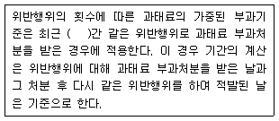
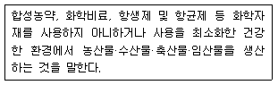
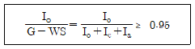
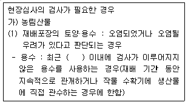

유기농업기사 (2021-03-07 기출문제)
1과목: 재배원론
1. 작물의 냉해에 대한 설명으로 틀린 것은?
- 병해형 냉해는 단백질의 합성이 증가되어 체내에 암모니아의 축적이 적어지는 형의 냉해이다.
- 혼합형 냉해는 지연형 냉해, 장해형 냉해, 병해형 냉해가 복합적으로 발생하여 수량이 급감하는 형의 냉해이다.
- 장해형 냉해는 유수형성기부터 개화기까지, 특히 생식세포의 감수분열기에 냉온으로 붙임현상이 나타나는 형의 냉해이다.
- 지연형 냉해는 생육 초기부터 출수기에 걸쳐서 여러 시기에 냉온을 만나서 출수가 지연되고, 이에 따라 등숙이 지연되어 후기의 저온으로 인하여 등숙 불량을 초래하는 형의 냉해이다.
(정답률: 86%)

2. 다음 중 단일식물에 해당하는 것으로만 나열된 것은?
- 샐비어, 콩
- 양귀비, 시금치
- 양파, 상추
- 아마, 감자
(정답률: 69%)
3. 맥류의 수발아를 방지하기 위한 대책으로 옳은 것은?
- 수확을 지연시킨다.
- 지베렐린을 살포한다.
- 만숙종보다 조숙종을 선택한다.
- 휴면기간이 짧은 품종을 선택한다.
(정답률: 66%)
4. 식물의 광합성 속도에는 이산화탄소의 농도 뿐 아니라 광의 강도도 관여를 하는데, 다음 중 광이 약할 때에 일어나는 일반적인 현상으로 가장 옳은 것은?
- 이산화탄소 보상점과 포화점이 다 같이 낮아진다.
- 이산화탄소 보상점과 포화점이 다 같이 높아진다.
- 이산화탄소 보상점이 높아지고 이산화탄소 포화점은 낮아진다.
- 이산화탄소 보상점이 낮아지고 이산화탄소 포화점은 높아진다.
(정답률: 66%)
5. 다음 중 추파맥류의 춘화처리에 가장 적당한 온도와 기간은?
- 0~3℃, 약 45일
- 6~10℃, 약 60일
- 0~3℃, 약 5일
- 6~10℃, 약 15일
(정답률: 63%)
6. 엽면시비의 장점으로 가장 거리가 먼 것은?
- 미량요소의 공급
- 점진적 영양회복
- 비료분의 유실방지
- 품질향상
(정답률: 70%)
7. 광합성 연구에 활용되는 방사선 동위 원소는?
- 14C
- 32P
- 42K
- 24Na
(정답률: 74%)
8. 작물체 내에서의 생리적 또는 형태적인 균형이나 비율이 작물생육의 지표로 사용되는 것과 거리가 가장 먼 것은?
- C/N 율
- T/R 율
- G-D 균형
- 광합성-호흡
(정답률: 73%)
9. 토양수분의 수주 높이가 1000㎝ 일 때 pF값과 기압은 각각 얼마인가?
- pF 1, 0.001기압
- pF 1, 0.01기압
- pF 2, 0.1기압
- pF 3, 1기압
(정답률: 67%)
10. 답전윤환의 효과로 가장 거리가 먼 것은?
- 지력증강
- 공간의 효율적 이용
- 잡초의 감소
- 기지의 회피
(정답률: 66%)
11. 다음 중 투명 플라스틱 필름의 멀칭 효과로 가장 거리가 먼 것은?
- 지온상승
- 잡초 발생 억제
- 토양 건조 방지
- 비료의 유실 방지
(정답률: 74%)
12. 엽록소 형성에 가장 효과적인 광파장은?
- 황색광 영역
- 자외선과 자색광 영역
- 녹색광 영역
- 청색광과 적색광 영역
(정답률: 73%)
13. 다음 중 굴광현상이 가장 유효한 것은?
- 440~480nm
- 490~520nm
- 560~630nm
- 650~690nm
(정답률: 76%)
14. 토양 수분 항수로 볼 때 강우 떠는 충분한 관개 후 2~3일 뒤의 수분 상태를 무엇이라 하는가?
- 최대용수량
- 초기위조점
- 포장용수량
- 영구위조점
(정답률: 80%)
15. 기온의 일변화(변온)에 따른 식물의 생리작용에 대한 설명으로 가장 옳은 것은?
- 낮의 기온이 높으면 광합성과 합성물질의 전류가 늦어진다.
- 기온의 일변화가 어느 정도 커지면 동화물질의 축적이 많아진다.
- 낮과 밤의 기온이 함께 상승할 때 동화물질의 축적이 최대가 된다.
- 밤의 기온의 높아야 호흡소모가 적다.
(정답률: 77%)
16. 다음 벼의 생육단계 중 한해(旱害)에 가장 강한 시기는?
- 분얼기
- 수잉기
- 출수기
- 유숙기
(정답률: 63%)
17. 벼에서 백화묘(白化苗)의 발생은 어떤 성분의 생성이 억제되기 때문인가?
- BA
- 카로티노이드
- ABA
- NAA
(정답률: 71%)
18. 십자화과 작물의 성숙과정으로 옳은 것은?
- 녹숙 → 백숙 → 갈숙 → 고숙
- 백숙 → 녹숙 → 갈숙 → 고숙
- 녹숙 → 백숙 → 고숙 → 갈숙
- 갈숙 → 백숙 → 녹숙 → 고숙
(정답률: 66%)
19. 작물의 내동성의 생리적 요인으로 틀린 것은?
- 원형질 수분 투과성 크면 내동성이 증대된다.
- 원형질의 점도가 낮은 것이 내동성이 크다.
- 당분 함량이 많으면 내동성이 증가한다.
- 전분 함량이 많으면 내동성이 증가한다.
(정답률: 70%)
20. 나팔꽃 대목에 고구마 순을 접목시켜 재배하는 가장 큰 목적은?
- 개화촉진
- 경엽의 수량 증대
- 내건성 증대
- 왜화재배
(정답률: 69%)
2과목: 토양비옥도 및 관리
21. 토양 내 작물이 이용할 수 있는 유효수분에 대한 설명으로 틀린 것은?
- 일반적으로 포장용수량과 위조계수 사이의 수분함량이며 통성에 따라 변한다.
- 식양도가 사양토보다 유효수분의 함량이 크다.
- 부식 함량이 증가하면 일정 범위까지 유효수분은 증가한다.
- 토양 내 염류는 유효수분의 함량을 높이는 데에 도움을 준다.
(정답률: 69%)
22. 토양의 유기물 증가 혹은 유실 방지 대책으로 거리가 먼 것은?
- 식물의 유체를 환원한다.
- 농약을 살포한다.
- 완숙퇴비를 시용한다.
- 토양 침식을 방지한다.
(정답률: 81%)
23. 담수 논토양의 일반적인 특성변화로 가장 옳은 것은?
- 호기성 미생물 활동이 증가한다.
- 인산성분의 유효도가 증가한다.
- 토양의 색은 적갈색으로 변한다.
- 토양이 산성화 된다.
(정답률: 62%)
24. 토양에 투입된 신선한 유기화합물의 분해에 대한 설명으로 틀린 것은?
- 일반적으로 처음에는 분해가 느리게 일어나다가 가속화되는 경향이 있다.
- 호기성 분해보다 혐기성 분해에 의해 생성된 유기화합물의 에너지가 더 높다.
- 토양토착형 미생물이 토양발효형 미생물보다 우선적으로 분해에 관여한다.
- 분해가 가속화되는 시기에는 토양부식의 양이 줄어들기도 한다.
(정답률: 50%)
25. 토양을 이루는 기본 토층으로, 미부숙유기물이 집적된 층과 점토나 유기물이 용탈된 토층을 나타내는 각각의 기호는?
- 미부숙유기물이 집적된 층 : Oi, 점토나 유기물이 용탈된 토층 : E
- 미부숙유기물이 집적된 층 : Oe, 점토나 유기물이 용탈된 토층 : C
- 미부숙유기물이 집적된 층 : Oa, 점토나 유기물이 용탈된 토층 : B
- 미부숙유기물이 집적된 층 : H, 점토나 유기물이 용탈된 토층 : C
(정답률: 63%)
26. 손의 감각을 이용한 토성 진단 시 수분이 포함되어 있어도 서로 뭉쳐지는 특성이 없을 뿐만 아니라 손가락을 이용하여 띠를 만들 때에도 띠를 형성하지 못하는 토성은?
- 양토
- 식양토
- 사토
- 미사질양토
(정답률: 70%)
27. 다음 중 유기물의 탄질비에 대한 설명으로 옳은 것은?
- 일반적으로 토양의 탄질비는 30 정도이다.
- 토양에 질소질 비료를 주면 탄질비가 올라간다.
- 유기물이 분해되는 동안 탄질비는 변하지 않는다.
- 탄질비가 높은 유기물이 토양에 공급되면 질소기아현상이 생길 가능성이 높다.
(정답률: 64%)
28. 다음 설명에 알맞은 토양미생물은?

- 진균(fungi)
- 조류(algae)
- 균근(mycorrhizae)
- 방선균(actionomycetes)
(정답률: 71%)
29. 다음 중 작물에게 가장 심각한 피해를 주는 토양 선충은?
- 부생성 선충
- 포식성 선충
- 곤충 기생성 선충
- 식물내부 기생성 선충
(정답률: 65%)
30. 다음 중 pH 5.0 이하인 강산성 토양에서 식물생육을 저해하고, 인산결핍을 초래하는 성분은?
- Al
- Ca
- K
- Mg
(정답률: 68%)
31. 다음 중 양이온교환용량이 가장 높은 토성은?
- 사토
- 식토
- 양토
- 미세 사양토
(정답률: 70%)
32. 토양 생성에 관여하는 풍화작용 중 성질이 다른 하나는?
- 산화작용
- 가수분해작용
- 수화작용
- 침식작용
(정답률: 71%)
33. 토양의 양이온 치환용량을 높일 수 있는 방법으로 가장 효과적인 것은?
- 토양 유기물 함량을 낮춘다.
- 수소이온 농도를 증가시킨다.
- 토양에 점토를 보충한다.
- 토양에 통기성을 좋게 한다.
(정답률: 63%)
34. 점토광물의 표면에 영구음전하가 존재하는 원인은 동형치환과 변두리전하에 의한 것이다. 이 중 점토 광물의 변두리전하에만 의존하여 영구음전하가 존재하는 점토광물은?
- Kaolinite
- Montmorillonite
- Vermiculite
- Allophane
(정답률: 53%)
35. 토양의 형태적 분류상 비성대토양의 대부분을 차지하며, 단면이 발달되지 않은 새로운 토양은?
- 몰리솔(Mollisol)
- 버티솔(Vertisol)
- 엔티솔(Entisol)
- 옥시솔(Oxisol)
(정답률: 63%)
36. 습윤 한랭지방에서 규산광물이 산성가수분해 될 때의 주요 생성물은?
- 미사
- 점토
- 석회
- 석고
(정답률: 48%)
37. 벼 재배 시 규산질 비료를 시용하여 얻을 수 있는 효과와 거리가 먼 것은?
- 병충해에 대한 내성 증가
- 내도복성(耐倒伏性) 증가
- 수광자세(受光姿勢)를 좋게 하여 동화율 향상
- 질소의 흡수를 빠르게 하여 등숙율(登熟率) 증가
(정답률: 55%)
38. 다음 중 강우에 의한 토양유실 감소방안에 있어 피복효과가 가장 낮은 것은?
- 콩재배
- 옥수수재배
- 목초재배
- 감자재배
(정답률: 58%)
39. 토양조사의 주요 목적이 아닌 것은?
- 토지 가격의 산정
- 합리적인 토지 이용
- 적합한 재배 작물 선정
- 토지 생산성 관리
(정답률: 76%)
40. 다음 중 토양 내에서 조류(藻類)의 작용에 해당되지 않는 것은?
- 유기물 생성
- 산소의 공급
- 황산의 고정
- 양분의 동화
(정답률: 60%)
3과목: 유기농업개론
41. 혼작의 장점이 아닌 것은?
- 잡초 경감
- 도복 용이
- 토양 비옥도 증진
- 재해 및 병충해에 대한 위험성 분산
(정답률: 66%)
42. 다음 중 논(환원)상태에 해당하는 것은?
- CO2
- NO3-
- Mn4+
- CH4
(정답률: 52%)
43. 유기낙농에서 젖소에게 급여할 사일리지 제조 시주로 발생하는 균은?
- 질소화성균
- 진균
- 방선균
- 유산균
(정답률: 64%)
44. 유기종자의 개념과 가장 거리가 먼 것은?
- 병충해 저항성이 높다.
- 1년간 유기농법으로 재배한 작물에서 채종한 것이다.
- 병원균이 확산되지 않도록 약제소독을 한 것이다.
- 상업용 종자가 아니다.
(정답률: 67%)
45. 주말농장의 감자밭에 동반작물로 메리골드를 심었을 때, 메리골드의 주요 기능은?
- 역병 방제
- 도둑나방 접근 방지
- 잡초 방제
- 수정 촉진
(정답률: 59%)
46. 시설원예 토양의 염류과잉집적에 의한 작물의 생육장해 문제를 해결하는 방법이 아닌 것은?
- 윤작을 한다.
- 연작 재배한다.
- 미량원소를 공급한다.
- 퇴비, 녹비 등을 적정량 시용한다.
(정답률: 75%)
47. 다음에서 설명하는 등(lamp)은?

- 형광등
- 수은등
- 메탈할라이드등
- 고압나트륨등
(정답률: 65%)
48. 다음 중 아연 중금속에 대한 내성정도가 가장 작은 것은?
- 파
- 당근
- 셀러리
- 시금치
(정답률: 53%)
49. 다음에서 설명하는 것은?

- 청경재배
- 피복재배
- 절충재배
- 초생재배
(정답률: 63%)
50. 고간류 사료 중에서 우리나라에서 가장 많이 이용하는 조사료는?
- 보릿짚
- 옥수수대
- 밀짚
- 볏짚
(정답률: 70%)
51. 유기농업에 사용하는 퇴비에 대한 설명으로 틀린 것은?
- 토양진단 후 퇴비 사용량을 결정한다.
- 토양전염병을 억제하는 효과를 나타낸다.
- 식물체에 양분과 미량원소를 지속적으로 공급해준다.
- 퇴비화 후에는 분해가 어려운 부식성 물질의 비율이 감소한다.
(정답률: 51%)
52. 교잡육종법에 있어 계통육종법에 관한 설명으로 틀린 것은?
- 초기세대에서 선발한다.
- 육종효과가 빨리 나타난다.
- 질적 형질의 개량에 효과적이다.
- 육종재료의 관리와 선발에 시간과 노력이 적게 든다.
(정답률: 59%)
53. 화학 제초제를 사용하지 않고 쌀겨를 투입하여 잡초를 방제하는 경우의 방제원리로 볼 수 없는 것은?
- 논물이 혼탁해져 광을 차단하여 잡초발아가 억제된다.
- 쌀겨의 영양분이 미생물에 의해 분해될 때 산소가 일시적으로 고갈되어 잡초의 발아억제에 도움을 준다.
- 쌀겨에 함유된 제초제 성분이 잡초의 발아를 억제한다.
- 쌀겨가 분해될 때 생성되는 메탄가스 등이 잡초의 발아를 억제한다.
(정답률: 56%)
54. 대체로 볍씨는 중량의 22.5% 정도의 물을 흡수하면 발아할 수 있는데 종자 소독 후 침종은 적산온도 100℃를 기준으로 수온이 15℃인 물에서는 며칠간 실시하는 것이 가장 적정한가?
- 4.5일
- 7일
- 10일
- 15일
(정답률: 62%)
55. 사료의 품질저하 방지 또는 사료의 효용을 높이기 위해 사료에 첨가하여 사용 가능한 물질이 아닌 것은?
- 초목 추출물
- DL-알라닌
- 이노시톨
- 버섯 추출액
(정답률: 48%)
56. 혐광성 종자에 해당하는 것으로만 나열된 것은?
- 담배, 상추
- 우엉, 차조기
- 가지, 파
- 금어초, 뽕나무
(정답률: 47%)
57. 『농림축산식품부 소관 친환경농어업 육성 및 유기식품 등의 관리·지원에 관한 법률 시행규칙』상 유기축산물에서 사료로 직접 사용되거나 배합사료의 원료로 사용가능한 물질은 식물성, 동물성, 광물성으로 구분된다. 다음 중 식물성에 해당하지 않는 것은?
- 조류(藻類)
- 식품가공부산물류
- 유지류
- 식염류
(정답률: 50%)
58. 직파재배의 장점으로 틀린 것은?
- 입모 안전
- 노동력 절감 및 노력분산
- 관개용수 절약
- 단기성 품종 활용 시 작부체계 도입이 유리
(정답률: 55%)
59. 다음 중 가축의 복지를 고려한 축사조건으로 적합하지 않은 것은?
- 사료와 음수는 접근이 용이하도록 한다.
- 자연환기를 억제하고, 밀폐된 구조로 한다.
- 가축이 활동하기 편하도록 충분한 공간을 확보하여야 한다.
- 축사의 바닥은 부드러우면서도 미끄럽지 아니하고, 청결 및 건조하여야 한다.
(정답률: 74%)
60. 유기농산물의 병해충 관리를 위해 사용 가능한 물질인 보르도액에 대한 설명으로 틀린 것은?
- 보르도액의 유효성분은 황산구리와 생석회이다.
- 조제 후 시간이 지나면 살균력이 떨어진다.
- 석회유황합제, 기계유제, 송지합제 등과 혼합하여 사용할 수 있다.
- 에스테르제와 같은 알칼리에 의해 분해가 용이한 약제와의 혼합사용은 피한다.
(정답률: 64%)
4과목: 유기식품 가공.유통론
61. 김치의 염지 방법 중 배추의 폭을 젖히면서 사이사이에 마른 소금을 뿌리는 것은?
- 염수법
- 건염법
- 습염법
- 통풍법
(정답률: 66%)
62. 유기가공식품의 제조기준으로 적절하지 않은 것은?
- 해충 및 병원균 관리를 위하여 방사선 조사 방법을 사용하지 않아야 한다.
- 지정된 식품첨가물, 미생물제제, 가공보조제만 사용하여야 한다.
- 유기농으로 재배한 GMO는 허용될 수 있다.
- 재활용 또는 생분해성 재질의 용기, 포장만 사용한다.
(정답률: 62%)
63. 면류 제조에 대한 설명으로 옳은 것은?
- 면류에 사용하는 소금은 반죽의 점탄성을 강하게 해줄 뿐 아리나, 수분 활성 저하를 통해 반죽이나 생면의 보존성을 높여 준다.
- 면류 제조 시에 부원료로 콩가루를 사용하는 이유는 콩가루에 들어 있는 글루텐이 반죽에 의하여 면의 탄력성, 점착성, 가소성을 높여주기 때문이다.
- 밀가루는 강력분, 중력분, 박력분의 3가지로 구분할 수 있는데 이는 밀가루 내의 탄수화물 함향으로 등급을 나눈 것이다.
- 밀가루 반죽의 적정온도는 밀가루의 종류, 가수량, 가염량에 관계없이 일정하다.
(정답률: 63%)
64. 한외여과에 대한 설명으로 틀린 것은?
- 고분자 물질로 만들어진 막의 미세한 공극을 이용한다.
- 물과 같이 분자량이 작은 물질은 막을 통과하나 분자량이 큰 고분자 물질의 경우 통과하지 못한다.
- 당류, 단백질, 생체물질, 고분자물질의 분리에 주로 사용된다.
- 삼투압보다 높은 압력을 용액 중에 작용시켜 용매가 반투막을 통과하게 한다.
(정답률: 48%)
65. 미생물의 가열치사시간을 10배 변화시키는데 필요한 가열 온도의 차이를 나타내는 값은?
- F값
- Z값
- D값
- K값
(정답률: 54%)
66. 식품의 위해요인에 해당되지 않는 것은?
- 철분의 결핍
- 이물질 혼입
- 위해 미생물 존재
- 농약, 항생제 존재
(정답률: 71%)
67. 마케팅 믹스 4P의 구성요소가 아닌 것은?
- 제품(Product)
- 가격(Price)
- 장소(Place)
- 원칙(Principle)
(정답률: 70%)
68. 식품취급자의 손 세척 시 주의할 점으로 틀린 것은?
- 온수보다 냉수로 하는 것이 세균 감소에 더 효과적이다.
- 고형비누보다 액상비누가 효과적이며 30초 이상 비누가 접촉할 수 있도록 하는 것이 효과적이다.
- 손은 물론 팔꿈치까지 세척해야한다.
- 세척 시에는 양손을 비비면서 마찰을 증가시키거나 솔을 사용할 경우 비상재성 세균의 감소율이 크다.
(정답률: 75%)
69. 유기농 오이 10kg 한 상자의 생산가격이 10000원이고, 유통마진율이 20%라고 할 때 소비자가격은 얼마인가?
- 12000원
- 12500원
- 13000원
- 13500원
(정답률: 56%)
70. 친환경농산물 유통의 특성으로 옳은 것은?
- 친환경농산물의 경쟁 척도로는 가격이 유일하다.
- 친환경농산물의 품질은 외관으로 충분히 확인 가능하므로 소비자가 현장에서 확인 가능하다.
- 친환경농산물의 품질 차별성은 가격결정의 변수와 무관하다.
- 친환경농산물의 유통조직의 물류효율성 여부는 경쟁력 결정요인이다.
(정답률: 66%)
71. 상업적 살균(commercial sterilization)에 대한 설명으로 가장 적절한 것은?
- 모든 미생물을 사멸하되 사멸 비용을 최소화하는 것이다.
- 일정한 유통조건에서 일정한 기간 동안 위생적 품질이 유지 될 수 있는 정도로 미생물을 사멸하는 것이다.
- 병원성 미생물을 집중적으로 완전 사멸시키는 것이다.
- 식물의 종류에 상관없이 같은 방법으로 살균하는 것이다.
(정답률: 72%)
72. 다량의 열변성이 일어나기 쉬운 유제품이나 주스 등의 액체를 가열, 냉각, 살균하는데 널리 사용하는 열교환기는?
- 재킷형 열교환기
- 코일형 열교환기
- 보테이터식 표면 긁기 열교환기
- 판상식 열교환기
(정답률: 55%)
73. 돌연변이 유발 물질을 테스트하는 Ames테스트에 관한 설명으로 틀린 것은?
- 히스티딘 요구주를 이용한다.
- 돌연변이가 유발된 실험군은 대조군에 비해 집락을 더 많이 발생시킨다.
- 발암성과 변이원성은 완전히 일치한다.
- 주로 살모넬라균을 이용한다.
(정답률: 59%)
74. 조리과정 중 생성되는 건강장해 물질은 다음 중 어디에 속하는가?
- 내인성
- 수인성
- 외인성
- 유인성
(정답률: 51%)
75. E.coli의 세대기간은 17분이다. 식품의 최초 E.coli 숫자가 10개/g이면 170분 후에는 E.coli는 얼마로 변화하겠는가?
- 1000개/g
- 10000개/g
- 10240개/g
- 590490개/g
(정답률: 61%)
76. 차류에 대한 설명 중 틀린 것은?
- 녹차는 가공 과정에서 찻잎을 증기 등으로 가열하여 그 속의 효소를 불활성화시켜 고유의 녹색을 보존시킨 차이다.
- 유기차는 유기농으로 재배한 참나무의 어린싹이나 어린잎을 재료로 유기 가공 기준에 맞게 제조한 유기 기호 음료이다.
- 홍차는 발효가 일어나지 않도록 찻잎에 열을 가하면서 향이 강해지도록 볶아서 색깔이 붉게 나도록 만든다.
- 우롱차는 찻잎을 햇볕에 쪼여 조금 시들게 하고 찻잎 성분의 일부를 산화시킴으로써 방향이 생긴 후 볶아 만든 반발효차이다.
(정답률: 66%)
77. 제품의 브랜드가 가지는 기능과 거리가 먼 것은?
- 상징 기능
- 광고 기능
- 가격 표시 기능
- 출처 표시 기능
(정답률: 63%)
78. 『친환경농어업 육성 및 유기식품 등의 관리·지원에 관한 법률』상 친환경농수산물 분류 및 인증에 관한 내용으로 틀린 것은?
- 친환경농수산물은 유기농산물과 무농약농산물, 무항생제수산물 및 활성처리제비사용 수산물로 분류한다.
- 유기식품등의 인증대상과 유기식품등의 생산, 제조·가공 또는 취급에 필요한 인증기준 등은 대통령령으로 정한다.
- 농림축산식품부장관은 유기식품등의 산업육성과 소비자 보호를 위하여 유기식품등에 대한 인증을 할 수 있다.
- 해양수산부장관은 유기식품등의 인증과 관련하여 인증심사원 등 필요한 인력·조직·시설 및 인증업무규정을 갖춘 기관 도는 단체를 인증기관으로 지정할 수 있다.
(정답률: 63%)
79. 진공포장방법에 대한 설명으로 틀린 것은?
- 쇠고기 등을 진공포장하면 변색작용을 촉진하게 된다.
- 가스 및 수증기 투과도가 높은 셀로판, EVA, PE 등이 이용된다.
- 호흡작용이 왕성한 신선 농산물의 장기유통용으로는 적합하지 않다.
- 포장지 내부의 공기제거로 박피 청과물의 갈변작용이 억제된다.
(정답률: 50%)
80. 필름표면에 계면활성제를 처리하여 첨가제 분산에 의한 필름의 장력을 증가시켜 결로현상이 일어나지 않게 하는 기능성 포장재는?
- 항균필름
- 방담필름
- 미세공필름
- 키토산필름
(정답률: 61%)
5과목: 유기농업관련 규정
81. 『농림축산식품부 소관 친환경농어업 육성 및 유기식품 등의 관리·지원에 관한 법률 시행규칙』에 따라 유기가축이 아닌 가축을 유기농장으로 입식하여 유기축산물을 생산·판매하려는 경우에는 일정 전환기간 이상을 유기축산물 인증기준에 따라 사육하여야 한다. 다음 중 축종, 생산물, 전환기간에 대한 기준으로 틀린 것은?
- 한우 - 식육용 - 입식 후 12개월 이상
- 육우 송아지 - 식육용 - 6개월령 미만의 송아지 입식 후 12개월
- 젖소 - 시유생산용 - 3개월 이상
- 돼지 - 식육용 - 입식 후 5개월 이상
(정답률: 46%)
82. 『농림축산식품부 소관 친환경농어업 육성 및 유기식품 등의 관리·지원에 관한 법률 시행규칙』상 유기표시 도형의 작도법 중 표시 도형의 가로의 길이(사각형의 왼쪽 끝과 오른쪽 끝의 폭 : W)를 기준으로 세로 길이 비율은?
- 0.75×W
- 0.80×W
- 0.85×W
- 0.95×W
(정답률: 62%)
83. 『농림축산식품부 소관 친환경농어업 육성 및 유기식품 등의 관리·지원에 관한 법률 시행규칙』상 “70퍼센트 미만이 유기농축산물인 제품”의 제한적 유기표시 허용기준으로 틀린 것은?
- 특정 원료 또는 재료로 유기농축산물만을 사용한 제품이어야 한다.
- 해당 원료·재료명의 일부로 “유기”라는 용어를 표시할 수 있다.
- 원재료명 표시란에 유기농축산물의 총함량 또는 원료·재료별 함량을 ppm으로 표시해야한다.
- 표시장소는 원재료명 표시란에 표시할 수 있다.
(정답률: 57%)
84. 『친환경축산물 및 유기식품 등의 인증에 관한 세부실시 요령』상 유기농산물 인증기준의 세부사항에서 가축분뇨 퇴비에 대한 내용으로 틀린 것은?
- 퇴비의 유해성분함량은 비료 공정규격설정 및 지정에 관한 고시에서 정한 퇴비규격에 적합하여야 한다.
- 완전히 부숙시킨 퇴비·액비의 경우 인증기간관의 장의 사전 승인 또는 사후 보고 등의 조치를 취하고 사용이 가능하다.
- 경축순환농법ㅇ로 사육하지 아니한 농장에서 유래된 가축분뇨 퇴비는 항생물질이 포함되지 아니하여야 한다.
- 가축분뇨 퇴·액비는 표면수 오염을 일으키지 아니하는 수준으로 사용하되, 장마철에는 사용하지 아니하여야 한다.
(정답률: 56%)
85. 『농림축산식품부 소관 친환경농어업 육성 및 유기식품 등의 관리·지원에 관한 법률 시행규칙』에 의한 유기축산물의 인증기준에서 생산물의 품질향상과 전통적인 생산방법의 유지를 위하여 허용되는 행위는? (단, 국립농산물품질관리원장이 고시로 정하는 경우를 제외함)
- 꼬리 자르기
- 이발 자르기
- 물리적 거세
- 가축의 꼬리 부분에 접착밴드 붙이기
(정답률: 60%)
86. 『농림축산식품부 소관 친환경농어업 육성 및 유기식품 등의 관리·지원에 관한 법률 시행규칙』에 따른 유기축산물의 사료 및 영양관리 기준에 대한 설명으로 틀린 것은?
- 유기가축에게는 100퍼센트 유기사료를 급여하여야 한다.
- 필요에 따라 가축의 대사기능 촉진을 위한 합성화합물을 첨가할 수 있다.
- 반추가축에게 사일리지만 급여해서는 아니되며 비반추 가축에게도 가능한 조사료 급여를 권장한다.
- 가축에게 관련법에 따른 생활용수의 수질기준에 적합한 신선한 음수를 상시 급여할 수 있어야 한다.
(정답률: 64%)
87. 『친환경농축산물 및 유기식품 등의 인증에 관한 세부실시 요령』상 유기농산물의 인증기준에 관한 규정으로 옳은 것은?
- 재배포장은 최근 2년간 인증기준 위반으로 인증취소처분을 받은 재배지가 아니어야 한다.
- 재배포장의 토양에 대해서는 매년 1회 이상의 검정을 실시하여 토양 비옥도가 유지·개선되고 염류가 과도하게 집적되지 아니하도록 노력하여야 한다.
- 재배포장은 인증받기 전에 다년생 작물의 경우 최소 수확 전 1년 전환기간 이상 해당 규정에 따른 재배방법을 준수하여야 한다.
- 산림 등 자연상태에서 자생하는 식용식물의 포장은 관련 규정에서 정하고 있는 허용자재 외의 자재가 2년 이상 사용되지 아니한 지역이어야 한다.
(정답률: 51%)
88. 『친환경농축산물 및 유기식품 등의 관리·지원에 관한 법률』상 인증심사원에 관한 내용 중 거짓이나 그 밖의 부정한 방법으로 인증심사 업무를 수행한 경우 인증심사원이 받는 처벌은?
- 자격 취소
- 3개월 이내의 자격 정지
- 12개월 이내의 자격 정지
- 24개월 이내의 자격 정지
(정답률: 69%)
89. 『농림축산식품부 소관 친환경농어업 육성 및 유기식품 등의 관리·지원에 관한 법률 시행규칙』상 유기농업자재의 공시 기준에서 식물에 대한 시험성적서 심사사항에 해당하는 내용이다. (가)와 (나)에 알맞은 내용은?

- (가) : 0, (나) : 1
- (가) : 1, (나) : 2
- (가) : 2, (나) : 3
- (가) : 3, (나) : 2
(정답률: 62%)
90. 『농림축산식품부 소관 친환경농어업 육성 및 유기식품 등의 관리·지원에 관한 법률 시행규칙』상 유기축산물 인증기준의 사육조전으로 틀린 것은?
- 사육장, 목초지 및 사료작물 재배지는 「토양환경보전법 시행규칙」의 토양오염우려기준을 초과하지 않아야 하며, 주변으로부터 오염될 우려가 없어야 한다.
- 축사 및 방목환경은 가축의 생물적·행동적 욕구를 만족시킬 수 있도록 조성하고 농촌진흥청장이 정하는 축사의 사육밀도를 유지·관리하여야 한다.
- 합성농약 또는 합성농약 성분이 함유된 동물용의약품 등의 자재를 축사 및 축사의 주변에 사용하지 않아야 한다.
- 사육 관련 업무를 수행하는 모든 작업자는 가축 종류별 특성에 따라 적절한 위생조치를 하여야 한다.
(정답률: 54%)
91. 『농림축산식품부 소관 친환경농어업 육성 및 유기식품 등의 관리·지원에 관한 법률 시행규칙』의 인증품 또는 인증품의 포장·용기에 표시하는 방법에서 다음 ( )안에 알맞은 내용은?

- 생산자의 주민등록번호 앞자리
- 생산자의 인증번호
- 생산자의 국가기술자격 발급번호
- 인증기관의 주소
(정답률: 74%)
92. 『친환경농축산물 및 유기식품 등의 인증에 관한 세부실시 요령』상 유기양봉제품의 전환기간에 대한 내용이다. ( )의 내용으로 알맞은 것은?

- 6개월
- 1년
- 2년
- 3년
(정답률: 56%)
93. 『농림축산식품부 소관 친환경농어업 육성 및 유기식품 등의 관리·지원에 관한 법률 시행규칙』상 유기가공식품 제조 시 가공보조제로 사용 가능한 물질 중 응고제로 활용 가능한 물질로만 구성된 것은?
- 염화칼슘, 탄산칼륨, 수산화칼륨
- 염화칼슘, 황산캄슘, 염화마그네슘
- 염화칼슘, 수산화나트륨, 탄산나트륨
- 염화칼슘, 수산화칼륨, 수산화나트륨
(정답률: 60%)
94. 『친환경농어업 육성 및 유기식품 등의 관리·지원에 관한 법률 시행령』상 과태료에 대한 내용이다. 다음 ( )에 알맞은 내용은?

- 3개월
- 6개월
- 1년
- 2년
(정답률: 57%)
95. 『친환경농어업 육성 및 유기식품 등의 관리·지원에 관한 법률』상 다음 내용은 무엇의 정의에 해당하는가?

- 친환경농수산물
- 유기
- 비식용유기가공품
- 친환경농어업
(정답률: 55%)
96. 『친환경농축산물 및 유기식품 등의 인증에 관한 세부실시 요령』상 유기가공식물 중 유기원료 비율의 계산법이다. 다음 각 문자가 나타내는 것으로 틀린 것은? (단, G=Io+Ic+Ia+WS 이다.)

- G : 제품(포장재, 용기 제외)의 중량
- Io : 유기원료(유기농산물+유기축산물+유기수산물+유기가공식품)의 중량
- Ia : 비유기 식품첨가물(가공보조제 포함)의 중량
- Ic : 비유기 원료(유기인증 표시가 없는 원료)의 중량
(정답률: 48%)
97. 『친환경농축산물 및 유기식품 등의 인증에 관한 세부실시 요령』상 인증심사의 절차 및 방법 세부사항에 대한 내용이다. ( )에 알맞은 내용은?

- 1년
- 3년
- 5년
- 7년
(정답률: 55%)
98. 『친환경농축산물 및 유기식품 등의 인증에 관한 세부실시 요령』 및 『친환경농어업 육성 및 유기식품 등의 관리·지원에 관한 법률』에 따라 인증대상에서 “취급자 인증품”에 포함되지 않는 것은?
- 포장된 인증품을 해체한 후 소포장하는 인증품
- 인증품을 산물로 구입하여 포장한 인증품
- 포장된 인증품을 해체하여 단순처리 후 재포장한 인증품
- 포장하지 않고 낱개로 판매하는 인증품
(정답률: 60%)
99. 『농림축산식품부 소관 친환경농어업 육성 및 유기식품 등의 관리·지원에 관한 법류 시행규칙』상 인증기관이 정당한 사유 없이 1년 이상 계속하여 인증을 하지 아니한 경우 인증기관에 내릴 수 있는 행정처분은? (단, 위반횟수는 1회이다.)
- 경고
- 업무정지 3월
- 업무정지 6월
- 지정취소
(정답률: 52%)
100. 『친환경농어업 육성 및 유기식품 등의 관리·지원에 관한 법률 시행령』상 농림축산식품부장관은 관계 중앙행정기관의 장과 협의하여 몇 년 마다 친환경농어업 발전을 위한 친환경농업 육성계획을 세워야 하는가?
- 2년
- 3년
- 5년
- 7년
(정답률: 66%)